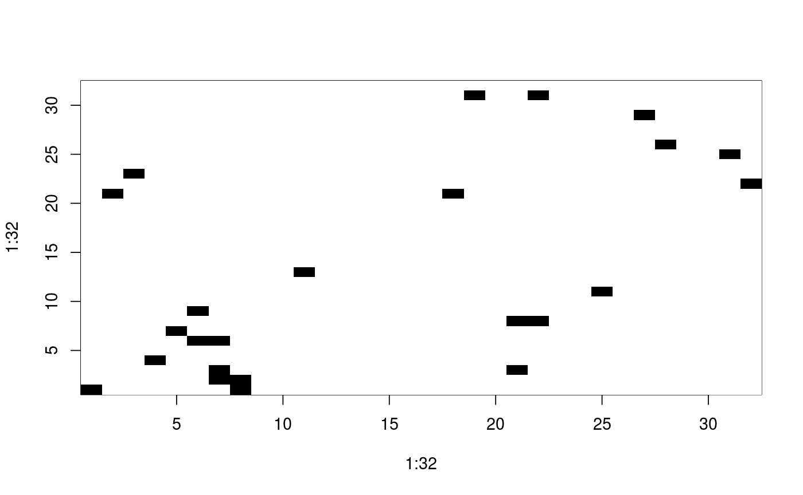

A 20m square is divided into 40 by 40 0.5m quadrats. Observations are in tens of grams of herb remains, 0 being from 0g to less than 10g, and so on. Analysis was mostly conducted using the interior 32 by 32 grid.
hopkins
num [1:40, 1:40] 0 0 0 0 0 0 0 0 0 1 ...
Upton, G., Fingleton, B. 1985 Spatial data analysis by example: point pattern and quatitative data, Wiley, pp. 38--39.
Hopkins, B., 1965 Observations on savanna burning in the Olokemeji Forest Reserve, Nigeria. Journal of Applied Ecology, 2, 367--381.
data(hopkins) image(1:32, 1:32, hopkins[5:36,36:5], breaks=c(-0.5, 3.5, 20), col=c("white", "black"))